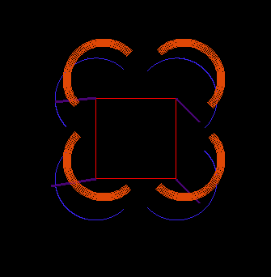

The software and firmware involved in the robot’s operation is an intermediary between the user, who desires to stop, start, and turn the robot, and the legs’ and magnets’ motion. A python script running on a laptop sends commands to a serial port, which is transmitted via bluetooth to the Arduino, which generates leg motion.
You can our full code on our github.
We wanted the robot to travel as quickly as possible, so we experimented with different patterns of leg movement to balance speed with the limitations of the servos. After some testing, we determined that pairing leg strides together on the diagonal and minimizing pauses between magnet swap commands to 0.7 seconds allowed for the fastest travel.
The robot’s motion is based around a control loop which corrects the robot’s walking towards whatever heading the user specifies.
void setWalkingAngles() {
float robotAngle = getRobotAngle();
float d = robotAngle - desiredHeading;
brAngle = -(max_angle + d*dt);
frAngle = max_angle + d*dt;
blAngle = -(max_angle-d*dt);
flAngle = max_angle - d*dt;
}
Between each stride, a loop checks for user input, updates the desired robot angle if they’ve pressed ‘a’ or ‘d’ (left or right), updates the ‘start/stop’ flag, checks for readings from the accelerometer to calculate actual heading, and uses the difference between current and desired to change the bounds of the leg rotation servos.
Our robot takes commands from the computer via Arduino’s serial monitor. This means a command must be entered and then sent in two separate steps. We hoped to have a smoother control system where arrow keys could be used to quickly change the robots behavior. To achieve this we began writing a program using Python’s pygame library that could take commands from keys and send them directly to the robot via Bluetooth.
However, the connection between Python and Arduino proved difficult to create, especially with the Bluetooth’s use of a second serial connection. Additionally, one of our Bluetooth modules short circuited and became useless, making this program worthless until we can secure a new module.
One goal we attempted to achieve was a program to move the robot in any direction without changing its orientation.
Our program modeled the robot visually using Python’s pygame library. It projected the robot one step ahead of its current position in the desired direction. By slowly increasing the size of the projected step we could maximize the distance the robot could move in each stride before surpassing the leg’s physical limitations. The visual model used collision detection to compare the robot’s current range of leg motion to the projected step’s field of possible leg positions.
In this visualization, the red square is the robot’s body, the purple lines are its legs, the blue arcs represent the current potential leg positions, and the orange arcs represent the projected potential positions, taking into account the ability of the legs to compress each step. When two corresponding colored arcs no longer overlap, that leg cannot be placed anywhere and still propel the robot the entirety of the step distance. The robot only needs two legs attached to move; this model enabled us to find which two legs needed to be placed where to optimize the step distance.
Unfortunately, we were unable to complete this program due to time constraints and other priorities. Hopefully, a future model could implement this algorithm so a user could send the robot scuttling in any direction.